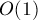
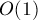
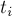

MAXimal
добавлено: 11 Jun 2008 10:36
редактировано: 4 May 2012 20:32
Содержание [скрыть]
Префикс-функция. Алгоритм Кнута-Морриса-Пратта
Префикс-функция. Определение
Дана строка ![s[0 \ldots n-1]](../tex2png/cache/0697d6e9689fa1f0f0cf71d3a81c61e0.png) . Требуется вычислить для неё префикс-функцию, т.е. массив чисел , где определяется следующим образом: это такая наибольшая длина наибольшего собственного суффикса подстроки
. Требуется вычислить для неё префикс-функцию, т.е. массив чисел , где определяется следующим образом: это такая наибольшая длина наибольшего собственного суффикса подстроки ![s[0 \ldots i]](../tex2png/cache/495fda7ff891ae7a249da7300ded14c8.png) , совпадающего с её префиксом (собственный суффикс — значит не совпадающий со всей строкой). В частности, значение полагается равным нулю.
, совпадающего с её префиксом (собственный суффикс — значит не совпадающий со всей строкой). В частности, значение полагается равным нулю.
Математически определение префикс-функции можно записать следующим образом:
Например, для строки "abcabcd" префикс-функция равна: , что означает:
- у строки "a" нет нетривиального префикса, совпадающего с суффиксом;
- у строки "ab" нет нетривиального префикса, совпадающего с суффиксом;
- у строки "abc" нет нетривиального префикса, совпадающего с суффиксом;
- у строки "abca" префикс длины
 совпадает с суффиксом;
совпадает с суффиксом; - у строки "abcab" префикс длины
 совпадает с суффиксом;
совпадает с суффиксом; - у строки "abcabc" префикс длины
 совпадает с суффиксом;
совпадает с суффиксом; - у строки "abcabcd" нет нетривиального префикса, совпадающего с суффиксом.
Другой пример — для строки "aabaaab" она равна: .
Тривиальный алгоритм
Непосредственно следуя определению, можно написать такой алгоритм вычисления префикс-функции:
vector<int> prefix_function (string s) { int n = (int) s.length(); vector<int> pi (n); for (int i=0; i<n; ++i) for (int k=0; k<=i; ++k) if (s.substr(0,k) == s.substr(i-k+1,k)) pi[i] = k; return pi; }
Как нетрудно заметить, работать он будет за  , что слишком медленно.
, что слишком медленно.
Эффективный алгоритм
Этот алгоритм был разработан Кнутом (Knuth) и Праттом (Pratt) и независимо от них Моррисом (Morris) в 1977 г. (как основной элемент для алгоритма поиска подстроки в строке).
Первая оптимизация
Первое важное замечание — что значение не более чем на единицу превосходит значение для любого  .
.
Действительно, в противном случае, если бы \pi[i] + 1">, то рассмотрим этот суффикс, оканчивающийся в позиции и имеющий длину — удалив из него последний символ, мы получим суффикс, оканчивающийся в позиции и имеющий длину , что лучше , т.е. пришли к противоречию. Иллюстрация этого противоречия (в этом примере должно быть равно 3):
(на этой схеме верхние фигурные скобки обозначают две одинаковые подстроки длины 2, нижние фигурные скобки — две одинаковые подстроки длины 4)
Таким образом, при переходе к следующей позиции очередной элемент префикс-функции мог либо увеличиться на единицу, либо не измениться, либо уменьшиться на какую-либо величину. Уже этот факт позволяет нам снизить асимптотику до  — поскольку за один шаг значение могло вырасти максимум на единицу, то суммарно для всей строки могло произойти максимум
— поскольку за один шаг значение могло вырасти максимум на единицу, то суммарно для всей строки могло произойти максимум  увеличений на единицу, и, как следствие (т.к. значение никогда не могло стать меньше нуля), максимум уменьшений. В итоге получится
увеличений на единицу, и, как следствие (т.к. значение никогда не могло стать меньше нуля), максимум уменьшений. В итоге получится  сравнений строк, т.е. мы уже достигли асимптотики .
сравнений строк, т.е. мы уже достигли асимптотики .
Вторая оптимизация
Пойдём дальше — избавимся от явных сравнений подстрок. Для этого постараемся максимально использовать информацию, вычисленную на предыдущих шагах.
Итак, пусть мы вычислили значение префикс-функции для некоторого . Теперь, если , то мы можем с уверенностью сказать, что , это иллюстрирует схема:
![\underbrace{ \overbrace{s_0 \ s_1 \ s_2}^{\pi[i]}[...]](../tex2png/cache/f146159fbb9ea77899d03da4573d18e2.png)
(на этой схеме снова одинаковые фигурные скобки обозначают одинаковые подстроки)
Пусть теперь, наоборот, оказалось, что . Тогда нам надо попытаться попробовать подстроку меньшей длины. В целях оптимизации хотелось бы сразу перейти к такой (наибольшей) длине , что по-прежнему выполняется префикс-свойство в позиции , т.е. :
![\overbrace{\underbrace{s_0 \ s_1}_{j} \ s_2 \ s_3[...]](../tex2png/cache/8c267f158d291598e8b8e75d9f5964ff.png)
Действительно, когда мы найдём такую длину  , то нам будет снова достаточно сравнить символы и — если они совпадут, то можно утверждать, что . Иначе нам надо будет снова найти меньшее (следующее по величине) значение , для которого выполняется префикс-свойство, и так далее. Может случиться, что такие значения кончатся — это происходит, когда . В этом случае, если , то , иначе .
, то нам будет снова достаточно сравнить символы и — если они совпадут, то можно утверждать, что . Иначе нам надо будет снова найти меньшее (следующее по величине) значение , для которого выполняется префикс-свойство, и так далее. Может случиться, что такие значения кончатся — это происходит, когда . В этом случае, если , то , иначе .
Итак, общая схема алгоритма у нас уже есть, нерешённым остался только вопрос об эффективном нахождении таких длин . Поставим этот вопрос формально: по текущей длине и позиции (для которых выполняется префикс-свойство, т.е. ) требуется найти наибольшее , для которого по-прежнему выполняется префикс-свойство:
После столь подробного описания уже практически напрашивается, что это значение  есть не что иное, как значение префикс-функции , которое уже было вычислено нами ранее (вычитание единицы появляется из-за 0-индексации строк). Таким образом, находить эти длины мы можем за  каждую.
есть не что иное, как значение префикс-функции , которое уже было вычислено нами ранее (вычитание единицы появляется из-за 0-индексации строк). Таким образом, находить эти длины мы можем за  каждую.
Итоговый алгоритм
Итак, мы окончательно построили алгоритм, который не содержит явных сравнений строк и выполняет действий.
Приведём здесь итоговую схему алгоритма:
- Считать значения префикс-функции будем по очереди: от
 к (значение просто присвоим равным нулю).
к (значение просто присвоим равным нулю). - Для подсчёта текущего значения мы заводим переменную , обозначающую длину текущего рассматриваемого образца. Изначально .
- Тестируем образец длины , для чего сравниваем символы и . Если они совпадают — то полагаем и переходим к следующему индексу . Если же символы отличаются, то уменьшаем длину , полагая её равной , и повторяем этот шаг алгоритма с начала.
- Если мы дошли до длины и так и не нашли совпадения, то останавливаем процесс перебора образцов и полагаем и переходим к следующему индексу .
Реализация
Алгоритм в итоге получился удивительно простым и лаконичным:
vector<int> prefix_function (string s) { int n = (int) s.length(); vector<int> pi (n); for (int i=1; i<n; ++i) { int j = pi[i-1]; while (j > 0 && s[i] != s[j]) j = pi[j-1]; if (s[i] == s[j]) ++j; pi[i] = j; } return pi; }
Как нетрудно заметить, этот алгоритм является онлайновым алгоритмом, т.е. он обрабатывает данные по ходу поступления — можно, например, считывать строку по одному символу и сразу обрабатывать этот символ, находя ответ для очередной позиции. Алгоритм требует хранения самой строки и предыдущих вычисленных значений префикс-функции, однако, как нетрудно заметить, если нам заранее известно максимальное значение, которое может принимать префикс-функция на всей строке, то достаточно будет хранить лишь на единицу большее количество первых символов строки и значений префикс-функции.
Применения
Поиск подстроки в строке. Алгоритм Кнута-Морриса-Пратта
Эта задача является классическим применением префикс-функции (и, собственно, она и была открыта в связи с этим).
Дан текст  и строка
и строка  , требуется найти и вывести позиции всех вхождений строки в текст .
, требуется найти и вывести позиции всех вхождений строки в текст .
Обозначим для удобства через длину строки , а через  — длину текста .
— длину текста .
Образуем строку , где символ — это разделитель, который не должен нигде более встречаться. Посчитаем для этой строки префикс-функцию. Теперь рассмотрим её значения, кроме первых  (которые, как видно, относятся к строке и разделителю). По определению, значение показывает наидлиннейшую длину подстроки, оканчивающейся в позиции и совпадающего с префиксом. Но в нашем случае это — фактически длина наибольшего блока совпадения со строкой и оканчивающегося в позиции . Больше, чем , эта длина быть не может — за счёт разделителя. А вот равенство (там, где оно достигается), означает, что в позиции оканчивается искомое вхождение строки (только не надо забывать, что все позиции отсчитываются в склеенной строке
(которые, как видно, относятся к строке и разделителю). По определению, значение показывает наидлиннейшую длину подстроки, оканчивающейся в позиции и совпадающего с префиксом. Но в нашем случае это — фактически длина наибольшего блока совпадения со строкой и оканчивающегося в позиции . Больше, чем , эта длина быть не может — за счёт разделителя. А вот равенство (там, где оно достигается), означает, что в позиции оканчивается искомое вхождение строки (только не надо забывать, что все позиции отсчитываются в склеенной строке  ).
).
Таким образом, если в какой-то позиции оказалось , то в позиции строки начинается очередное вхождение строки в строку .
Как уже упоминалось при описании алгоритма вычисления префикс-функции, если известно, что значения префикс-функции не будут превышать некоторой величины, то достаточно хранить не всю строку и префикс-функцию, а только её начало. В нашем случае это означает, что нужно хранить в памяти лишь строку  и значение префикс-функции на ней, а потом уже считывать по одному символу строку и пересчитывать текущее значение префикс-функции.
и значение префикс-функции на ней, а потом уже считывать по одному символу строку и пересчитывать текущее значение префикс-функции.
Итак, алгоритм Кнута-Морриса-Пратта решает эту задачу за  времени и памяти.
времени и памяти.
Подсчёт числа вхождений каждого префикса
Здесь мы рассмотрим сразу две задачи. Дана строка длины . В первом варианте требуется для каждого префикса посчитать, сколько раз он встречается в самой же строке . Во втором варианте задачи дана другая строка , и требуется для каждого префикса посчитать, сколько раз он встречается в .
Решим сначала первую задачу. Рассмотрим в какой-либо позиции значение префикс-функции в ней . По определению, оно означает, что в позиции оканчивается вхождение префикса строки длины , и никакой больший префикс оканчиваться в позиции не может. В то же время, в позиции могло оканчиваться и вхождение префиксов меньших длин (и, очевидно, совсем не обязательно длины ). Однако, как нетрудно заметить, мы пришли к тому же вопросу, на который мы уже отвечали при рассмотрении алгоритма вычисления префикс-функции: по данной длине надо сказать, какой наидлиннейший её собственный суффикс совпадает с её префиксом. Мы уже выяснили, что ответом на этот вопрос будет . Но тогда и в этой задаче, если в позиции оканчивается вхождение подстроки длины , совпадающей с префиксом, то в также оканчивается вхождение подстроки длины , совпадающей с префиксом, а для неё применимы те же рассуждения, поэтому в также оканчивается и вхождение длины и так далее (пока индекс не станет нулевым). Таким образом, для вычисления ответа мы должны выполнить такой цикл:
vector<int> ans (n+1); for (int i=0; i<n; ++i) ++ans[pi[i]]; for (int i=n-1; i>0; --i) ans[pi[i-1]] += ans[i];
Здесь мы для каждого значения префикс-функции сначала посчитали, сколько раз он встречался в массиве , а затем посчитали такую в некотором роде динамику: если мы знаем, что префикс длины встречался ровно раз, то именно такое количество надо прибавить к числу вхождений его длиннейшего собственного суффикса, совпадающего с его префиксом; затем уже из этого суффикса (конечно, меньшей чем длины) выполнится "пробрасывание" этого количества к своему суффиксу, и т.д.
Теперь рассмотрим вторую задачу. Применим стандартный приём: припишем к строке строку через разделитель, т.е. получим строку , и посчитаем для неё префикс-функцию. Единственное отличие от первой задачи будет в том, что учитывать надо только те значения префикс-функции, которые относятся к строке , т.е. все для  .
.
Количество различных подстрок в строке
Дана строка длины . Требуется посчитать количество её различных подстрок.
Будем решать эту задачу итеративно. А именно, научимся, зная текущее количество различных подстрок, пересчитывать это количество при добавлении в конец одного символа.
Итак, пусть — текущее количество различных подстрок строки , и мы добавляем в конец символ  . Очевидно, в результате могли появиться некоторые новые подстроки, оканчивавшиеся на этом новом символе . А именно, добавляются в качестве новых те подстроки, оканчивающиеся на символе и не встречавшиеся ранее.
. Очевидно, в результате могли появиться некоторые новые подстроки, оканчивавшиеся на этом новом символе . А именно, добавляются в качестве новых те подстроки, оканчивающиеся на символе и не встречавшиеся ранее.
Возьмём строку  и инвертируем её (запишем символы в обратном порядке). Наша задача — посчитать, сколько у строки таких префиксов, которые не встречаются в ней более нигде. Но если мы посчитаем для строки префикс-функцию и найдём её максимальное значение , то, очевидно, в строке встречается (не в начале) её префикс длины , но не большей длины. Понятно, префиксы меньшей длины уж точно встречаются в ней.
и инвертируем её (запишем символы в обратном порядке). Наша задача — посчитать, сколько у строки таких префиксов, которые не встречаются в ней более нигде. Но если мы посчитаем для строки префикс-функцию и найдём её максимальное значение , то, очевидно, в строке встречается (не в начале) её префикс длины , но не большей длины. Понятно, префиксы меньшей длины уж точно встречаются в ней.
Итак, мы получили, что число новых подстрок, появляющихся при дописывании символа , равно  .
.
Таким образом, для каждого дописываемого символа мы за можем пересчитать количество различных подстрок строки. Следовательно, за мы можем найти количество различных подстрок для любой заданной строки.
Стоит заметить, что совершенно аналогично можно пересчитывать количество различных подстрок и при дописывании символа в начало, а также при удалении символа с конца или с начала.
Сжатие строки
Дана строка длины . Требуется найти самое короткое её "сжатое" представление, т.е. найти такую строку наименьшей длины, что можно представить в виде конкатенации одной или нескольких копий .
Понятно, что проблема является в нахождении длины искомой строки . Зная длину, ответом на задачу будет, например, префикс строки этой длины.
Посчитаем по строке префикс-функцию. Рассмотрим её последнее значение, т.е. ![\pi[n-1]](../tex2png/cache/9635dd1b719edbdd4fc22e22c691622f.png) , и введём обозначение . Покажем, что если делится на , то это и будет длиной ответа, иначе эффективного сжатия не существует, и ответ равен .
, и введём обозначение . Покажем, что если делится на , то это и будет длиной ответа, иначе эффективного сжатия не существует, и ответ равен .
Действительно, пусть делится на . Тогда строку можно представить в виде нескольких блоков длины , причём, по определению префикс-функции, префикс длины будет совпадать с её суффиксом. Но тогда последний блок должен будет совпадать с предпоследним, предпоследний - с предпредпоследним, и т.д. В итоге получится, что все блоки блоки совпадают, и такое действительно подходит под ответ.
Покажем, что этот ответ оптимален. Действительно, в противном случае, если бы нашлось меньшее , то и префикс-функция на конце была бы больше, чем , т.е. пришли к противоречию.
Пусть теперь не делится на . Покажем, что отсюда следует, что длина ответа равна . Докажем от противного — предположим, что ответ существует, и имеет длину  ( делитель ). Заметим, что префикс-функция необходимо должна быть больше , т.е. этот суффикс должен частично накрывать первый блок. Теперь рассмотрим второй блок строки; т.к. префикс совпадает с суффиксом, и и префикс, и суффикс покрывают этот блок, и их смещение друг относительно друга не делит длину блока (а иначе бы делило ), то все символы блока совпадают. Но тогда строка состоит из одного и того же символа, отсюда
( делитель ). Заметим, что префикс-функция необходимо должна быть больше , т.е. этот суффикс должен частично накрывать первый блок. Теперь рассмотрим второй блок строки; т.к. префикс совпадает с суффиксом, и и префикс, и суффикс покрывают этот блок, и их смещение друг относительно друга не делит длину блока (а иначе бы делило ), то все символы блока совпадают. Но тогда строка состоит из одного и того же символа, отсюда  , и ответ должен существовать, т.е. так мы придём к противоречию.
, и ответ должен существовать, т.е. так мы придём к противоречию.
Построение автомата по префикс-функции
Вернёмся к уже неоднократно использованному приёму конкатенации двух строк через разделитель, т.е. для данных строк и вычисление префикс-функции для строки . Очевидно, что т.к. символ является разделителем, то значение префикс-функции никогда не превысит . Отсюда следует, что, как упоминалось при описании алгоритма вычисления префикс-функции, достаточно хранить только строку  и значения префикс-функции для неё, а для всех последующих символов префикс-функцию вычислять на лету:
и значения префикс-функции для неё, а для всех последующих символов префикс-функцию вычислять на лету:
Действительно, в такой ситуации, зная очередной символ и значение префикс-функции в предыдущей позиции, можно будет вычислить новое значение префикс-функции, никак при этом не используя все предыдущие символы строки и значения префикс-функции в них.
Другими словами, мы можем построить автомат: состоянием в нём будет текущее значение префикс-функции, переходы из одного состояния в другое будут осуществляться под действием символа:
Таким образом, даже ещё не имея строки , мы можем предварительно построить такую таблицу переходов с помощью того же алгоритма вычисления префикс-функции:
string s; // входная строка const int alphabet = 256; // мощность алфавита символов, обычно меньше s += '#'; int n = (int) s.length(); vector<int> pi = prefix_function (s); vector < vector<int> > aut (n, vector<int> (alphabet)); for (int i=0; i<n; ++i) for (char c=0; c<alphabet; ++c) { int j = i; while (j > 0 && c != s[j]) j = pi[j-1]; if (c == s[j]) ++j; aut[i][c] = j; }
Правда, в таком виде алгоритм будет работать за ( — мощность алфавита). Но заметим, что вместо внутреннего цикла , который постепенно укорачивает ответ, мы можем воспользоваться уже вычисленной частью таблицы: переходя от значения к значению , мы фактически говорим, что переход из состояния приведёт в то же состояние, что и переход , а для него ответ уже точно посчитан (т.к. ):
string s; // входная строка const int alphabet = 256; // мощность алфавита символов, обычно меньше s += '#'; int n = (int) s.length(); vector<int> pi = prefix_function (s); vector < vector<int> > aut (n, vector<int> (alphabet)); for (int i=0; i<n; ++i) for (char c=0; c<alphabet; ++c) if (i > 0 && c != s[i]) aut[i][c] = aut[pi[i-1]][c]; else aut[i][c] = i + (c == s[i]);
В итоге получилась крайне простая реализация построения автомата, работающая за  .
.
Когда может быть полезен такой автомат? Для начала вспомним, что мы считаем префикс-функцию для строки , и её значения обычно используют с единственной целью: найти все вхождения строки в строку .
Поэтому самая очевидная польза от построения такого автомата — ускорение вычисления префикс-функции для строки . Построив по строке автомат, нам уже больше не нужна ни строка , ни значения префикс-функции в ней, не нужны и никакие вычисления — все переходы (т.е. то, как будет меняться префикс-функция) уже предпосчитаны в таблице.
Но есть и второе, менее очевидное применение. Это случай, когда строка является гигантской строкой, построенной по какому-либо правилу. Это может быть, например, строка Грея или строка, образованная рекурсивной комбинацией нескольких коротких строк, поданных на вход.
Пусть для определённости мы решаем такую задачу: дан номер строки Грея, и дана строка длины . Требуется посчитать количество вхождений строки в -ю строку Грея. Напомним, строки Грея определяются таким образом:

В таких случаях даже просто построение строки будет невозможным из-за её астрономической длины (например, -ая строка Грея имеет длину ). Тем не менее, мы сможем посчитать значение префикс-функции на конце этой строки, зная значение префикс-функции, которое было перед началом этой строки.
Итак, помимо самого автомата также посчитаем такие величины: — значение автомата, достигаемое после "скармливания" ему строки , если до этого автомат находился в состоянии . Вторая величина — — количество вхождений строки в строку , если до "скармливания" этой строки автомат находился в состоянии . Фактически, — это количество раз, которое автомат принимал значение за время "скармливания" строки . Понятно, что ответом на задачу будет величина .
Как считать эти величины? Во-первых, базовыми значениями являются ![G[0][j] = j](../tex2png/cache/dd5b0c9107e88b1581946764562a93ee.png) , . А все последующие значения можно вычислять по предыдущим значениям и используя автомат. Итак, для вычисления этих значений для некоторого мы вспоминаем, что строка состоит из плюс -ый символ алфавита плюс снова . Тогда после "скармливания" первого куска () автомат перейдёт в состояние , затем после "скармливания" символа он перейдёт в состояние:
, . А все последующие значения можно вычислять по предыдущим значениям и используя автомат. Итак, для вычисления этих значений для некоторого мы вспоминаем, что строка состоит из плюс -ый символ алфавита плюс снова . Тогда после "скармливания" первого куска () автомат перейдёт в состояние , затем после "скармливания" символа он перейдёт в состояние:
После этого автомату "скармливается" последний кусок, т.е. :
Количества легко считаются как сумма количеств по трём кускам : строка , символ , и снова строка :
Итак, мы решили задачу для строк Грея, аналогично можно решить целый класс таких задач. Например, точно таким же методом решается следующая задача: дана строка , и образцы , каждый из которых задаётся следующим образом: это строка из обычных символов, среди которых могут встречаться рекурсивные вставки других строк в форме , которая означает, что в это место должно быть вставлено экземпляров строки  . Пример такой схемы:
. Пример такой схемы:
![t_3 = t_2[50] + t_1[100]](../tex2png/cache/18df5771b6b8ed82a51499b1007c9efb.png)
Гарантируется, что это описание не содержит в себе циклических зависимостей. Ограничения таковы, что если явным образом раскрывать рекурсию и находить строки , то их длины могут достигать порядка  .
.
Требуется найти количество вхождений строки в каждую из строк .
Задача решается так же, построением автомата префикс-функции, затем надо вычислять и добавлять в него переходы по целым строкам . В общем-то, это просто более общий случай по сравнению с задачей о строках Грея.
Задачи в online judges
Список задач, которые можно решить, используя префикс-функцию:
- UVA #455 "Periodic Strings" [сложность: средняя]
- UVA #11022 "String Factoring" [сложность: средняя]
- UVA #11452 "Dancing the Cheeky-Cheeky" [сложность: средняя]
- SGU #284 "Grammar" [сложность: высокая]